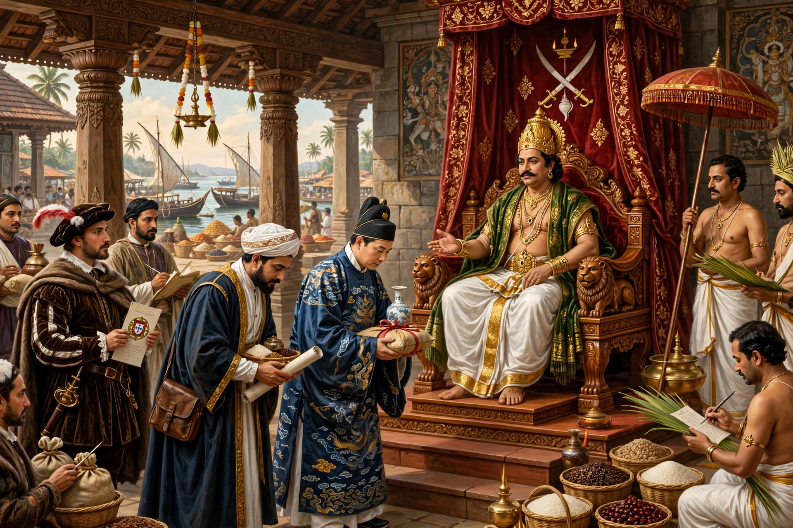

| Zamorin of Calicut | |
|---|---|
| Malayalam | സാമൂതിരി (Sāmūtiri) |
| Realm | Kingdom of Calicut (Kozhikode) |
| Region | Malabar Coast, southwest India |
| Ascendancy | By the 15th century; title abolished 1806 |
| House | Nediyiruppu Swarupam (Eradi) |
The Zamorin (Malayalam: Sāmūtiri, conventionally derived from samudra, "sea" — "lord of the sea") was the Hindu ruler of the kingdom of Calicut on India's Malabar Coast. By the time Vasco da Gama landed at Calicut in 1498, the Zamorin was the most powerful ruler of the coast, his port the great emporium of the Indian Ocean pepper trade.

The Eradi chiefs of Nediyiruppu seized the port of Calicut in the centuries after the fall of the Chera empire and built its prosperity on a policy remarkable for the age: merchants of every nation and faith — Arabs, Chinese, Jews, Christians — were protected and taxed lightly. Ibn Battuta and the Chinese treasure fleets of Zheng He visited a cosmopolitan harbour ruled, in Marco Polo's phrase, by a king who held his kingdom "in great security".
Da Gama's arrival opened a century of conflict. The Portuguese demanded expulsion of Muslim traders and a monopoly of the spice trade; the Zamorins refused, and fought the Portuguese Estado da Índia in a long series of naval wars, notably under the admirals known as the Kunjali Marakkars. Calicut's power waned as trade shifted to Portuguese Cochin, and in the 18th century the kingdom was overrun by Mysore under Haidar Ali and Tipu Sultan, then annexed piecemeal by the British, who abolished the Zamorin's ruling status in 1806.